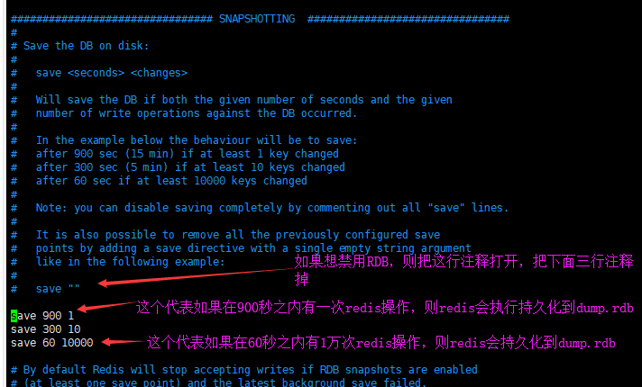

RDB
RDB是Redis默认的持久化方案（默认开启）。在指定的时间间隔内，执行指定次数的写操作，则会将内存中的数据写入到磁盘中。即在指定目录下生成一个dump.rdb文件。Redis 重启会通过加载dump.rdb文件恢复数据。
RDB配置详解

AOF
AOF是Redis的另外一种持久化方案，默认不开启。它的出现是为了弥补RDB的不足（数据的不一致性），所以它采用日志的形式（即增删改命令）来记录每个写操作，并追加到文件中。
开启AOF后，每有一条数据写到redis中，都会同时向磁盘文件写一条redis指令日志，中间会经过系统磁盘写缓存（oscached）fsync参数可以设置强制写入磁盘时间
AOF配置详解

一般是同时开启RDB和AOF
redis重启的时候如果RDB和AOF同时开启的时候，redis是从AOF持久化方案的appendonly.aof文件拉取硬盘数据到内存中，而不是利用RDB持久化方案的dump.rdb文件